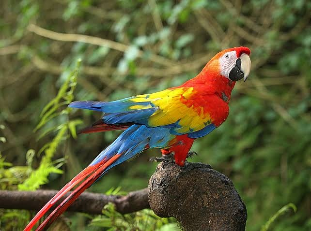
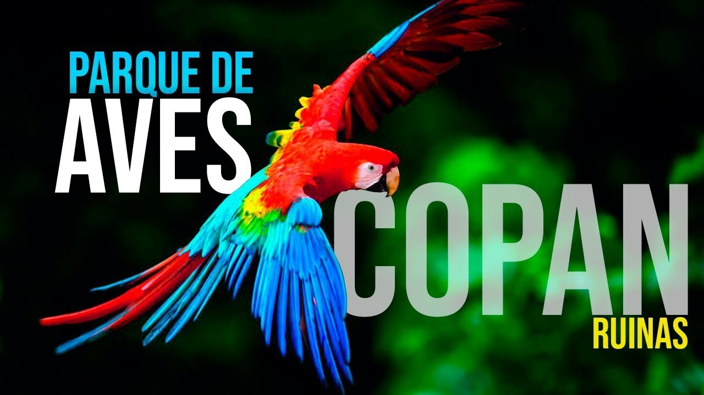

Nuestro equipo estará encantado de ayudarte a organizar tu visita a
Copán Ruinas, brindándote información sobre recorridos, lugares
turísticos y todo lo necesario para que disfrutes una experiencia
inolvidable.
